2018年中国人工智能最新政策
时间 | 行政机关 | 政策标题 | 主要内容 |
2015年5月 | 国务院 | 《中国制造2025》 | 首次提出智能制造 |
2015年7月 | 国务院 | 《“互联网+”行动指导意见》 | 明确人工智能为重点发展领域 |
2016年4月 | 工信部、国家发改委、财政部 | 《机器人产业发展规划(2016-2020年)》 | 聚焦智能工业型机器人发展 |
2016年5月 | 发改委、科技部、工信部、网信办 | 《“互联网+”人工智能三年行动实施方案》 | 规划人工智能产业体系建设 |
2016年7月 | 国务院 | 《“十三五”国家科技创新规划》 | 研发人工智能支持智能产业发展 |
2016年9月 | 国家发改委 | 《国家发展改革委办公厅关于请组织申报“互联网+”领域创新能力建设专项的通知》 | 将人工智能纳入“互联网+”建设专项 |
2016年12月 | 国务院 | 《“十三五”国家战略性新兴产业发展规划的通知》 | 支持人工智能领域软硬件开发及规模化应用 |
2017年3月 | 国务院 | 《政府工作报告》 | 人工智能出现在《政府工作报告》 |
2017年7月 | 国务院 | 《新一代人工智能发展规划》 | 提出阶段战略目标 |
2017年12月 | 工信部 | 《促进新一代人工智能产业发展三年行动计划（2018-2020年）》 | 推进人工智能和制造业深度融合 |
2018年1月 | 中国电子技术标准化研究院 | 《人工智能标准化白皮书(2018版)》 | 提出能够适应和引导人工智能产业发展的标准体系 |
2018年3月 | 国务院 | 《政府工作报告》 | 加强新一代人工智能研发应用 |
2018年4月 | 教育部 | 《高等学校人工智能创新行动计划》 | 加快国内高校的人工智能人才培养 |
1、国务院2017《政府工作报告》：人工智能首次出现在《政府工作报告》
2017年3月，李克强总理在《政府工作报告》中提到：“一方面要加快培育新材料、人工智能、集成电路、生物制药、第五代移动通信等新兴产业，另一方面要应用大数据、云计算、物联网等技术加快改造提升传统产业，把发展智能制造作为主攻方向。”
2、国务院《新一代人工智能发展规划》：提出阶段战略目标
2017年7月20日，国务院印发《新一代人工智能发展规划》，提出了面向2030年我国新一代人工智能发展的指导思想、战略目标、重点任务和保障措施，部署构筑我国人工智能发展的先发优势，加快建设创新型国家和世界科技强国。
《规划》明确了我国新一代人工智能发展的战略目标：到2020年，人工智能总体技术和应用与世界先进水平同步，人工智能产业成为新的重要经济增长点，人工智能技术应用成为改善民生的新途径；到2025年，人工智能基础理论实现重大突破，部分技术与应用达到世界领先水平，人工智能成为我国产业升级和经济转型的主要动力，智能社会建设取得积极进展；到2030年，人工智能理论、技术与应用总体达到世界领先水平，成为世界主要人工智能创新中心。
3、工信部《促进新一代人工智能产业发展三年行动计划（2018-2020年）》：推进人工智能和制造业深度融合
2017年12月，工业和信息化部印发《促进新一代人工智能产业发展三年行动计划（2018-2020年）》。计划提出，以信息技术与制造技术深度融合为主线，以新一代人工智能技术的产业化和集成应用为重点，推进人工智能和制造业深度融合，加快制造强国和网络强国建设。
教育需要多样化
【政策一】国务院印发《新一代人工智能发展规划》
2017年，7月8 日，国务院印发《新一代人工智能发展规划》，《规划》强调：“实施全民智能教育项目，在中小学阶段设置人工智能相关课程，逐步推广编程教育，鼓励社会力量参与寓教于乐的编程教学软件、游戏的开发和推广。建设和完善人工智能科普基础设施。”。
重视人才培养、中小学阶段教育、在线智能教育平台建设等方面发展。
【政策二】教育部印发《中小学综合实践活动课程指导纲要》
2017年，9月27日，教育部印发《中小学综合实践活动课程指导纲要》（以下简称“纲要”），提出它是义务教育和普通高中课程方案规定的必修课程，与学科课程并列设置，从小学到高中，各年级全面实施，所有学生都要学习，都要参加。其中提到的“设计制作”、“创意物化”、“有条件的学校要建创客空间”等方面。
《纲要》强调设计与实施综合实践活动课程，要引导学生运用各门学科知识分析解决实际问题，使学科知识在综合实践中得到延伸、综合、提升。学生在综合实践活动中所发现的问题要在相关学科教学中进行深入分析。要防止用学科实践环节取代综合实践活动。
【政策三】教育部印发了《高等学校人工智能创新行动计划》
4月2日，教育部印发了《高等学校人工智能创新行动计划》（以下简称《行动计划》），这是继国务院《新一代人工智能发展规划》和工信部《促进新一代人工智能产业发展三年行动计划（2018-2020年）》的由一举动，且是由教育部牵头主办。由此可见，国家正在采取行动弥补我国巨大的人工智能人才缺口。
《人工智能基础（高中版）》发布
2018年7月，我国第一本面向中学生的AI教材——《人工智能基础（高中版）》正式发布。目前，全国已有40所学校引入该教材作为选修课或校本课程，成为首批“人工智能教育实验基地学校”。华东师大二附中、上海交通大学附中、清华大学附属中学、上海市市西中学等40所全国知名学校成为首批“人工智能教育实验基地校”，并接受现场授牌。
在未来
麦肯锡预测：到2030年 机器人或将抢走8亿人的饭碗！
根据麦肯锡研究机构的一份新报告显示，到2030年，全球有多达8亿人的工作岗位可能被自动化机器人取代，这相当于当今全球劳动力的五分之一。
第一章 人工智能与Scratch
人工智能已经写入中小学课程标准，但在中小学阶段就已经入门人工智能的童鞋恐怕还是比较少见。如果你觉得Python对小朋友来说太难，那么图形化界面的Scratch编程语言可能是个不错的选择。这里有一个machine learning for kids的网站（https://machinelearningforkids.co.uk/），上面搜集了各种和人工智能有关系的Scratch动手项目，从中我们精心挑取了7个初级课程，包括智能教室、让我开心、人脸解锁等。虽然不能通过这些项目直接操作计算机，但在虚拟界面上，小朋友们将能感受到这些生活中就能频繁接触到的AI系统背后的逻辑。
1.1 认识Scratch
在麻省理工学院的Scratch官网上，创始发明团队如此介绍Scratch：
使用 Scratch，你可以编写属于你的互动媒体，像是故事、游戏、动画，然后你可以将你的创意分享给全世界。Scratch 帮助年轻人更具创造力、逻辑力、协作力，这些都是生活在 21 世纪不可或缺的基本能力。
使用Scratch学习的学生，会觉得编程就像是设计一款游戏或编写动画故事。不需要像Python、C语言等编程语言撰写复杂的文字语法，只需要理解程序之间的逻辑关系，通过指令流程安排和一连串积木模块的组合，段时间内就可完成有趣的游戏和动画设计。
1.2机器学习
什么是机械学习？
例如，假设我想教你如何踢球。
在传统的编程方法中，我会给你一系列详细的说明。
我会告诉你抬起脚的距离。我会告诉你踝关节的角度。我会告诉你膝盖弯曲多少。移动腿的速度有多快。
我会告诉你我到底想要你做什么，我想要你做什么，我想要你做多快，以及你应该做的事情的顺序。
在机器学习方法中，我会向你展示很多踢球的例子。
也许是不同人踢球的例子。
甚至可能踢不同类型的球。
我没有告诉你该怎么做，而是让你以已经能够踢球的人们为例子进行学习。
我们为什么要把它介绍给孩子们？
机器学习无处不在，机器学习就在我们日常生活中，我们每天都使用着机器学习系统，百度无人汽车驾驶，手机里的Siri、小米助手智能音响等就是机器学习的代表作，物联网时代的智能教具。
它很有趣，不确定大部分人喜欢它，有多引人注目，但确实与我们关系密切。
培训计算机，了解它是如何学习，尝试弄清楚它出了什么问题以及如何教它改进，并看到它发生变化，这很有趣。
我们今天教的孩子们在不久的将来会扮演社会上各种各样的角色，我们认为将所有这些的角色引入机器学习都有好处，而不仅仅是像开发人员或技术人员那样明显的。
他们中的一些人可能会成为下一代技术的发明者。
发明下一种类的机器学习系统，可以解决我们现今甚至无法解决的更大问题。
我们需要它们来保持技术向前发展，并且可能今天向他们介绍机器学习，让他们玩它，体验它，理解它 - 也许这将激发他们的想象力并开启一生的发明和创造力。
编码不是使用机器学习的唯一方法。
不只是开发人员会使用它。
现在构建的一些工具，包括像SPSS和Watson Analytics这样的IBM工具，看起来更像是电子表格，是从您输入的数据中学习模式的电子表格。
这不是认为我们只需要教给未来的超级程序员的东西。它是关于将它们引入到他们未来的工具包中的一种工具，他们需要使用它来解决明天的问题。
而且，更重要的是，教他们思考以这种方式解决问题。
我们怎样才能做到呢？
孩子们学习机器学习的最佳方式是让他们亲身体验一次。
如果他们可以训练计算机做某事，那么他们就可以得到它。
如果他们看到了什么使它更有效地学习，或者什么样的培训使它变得错误 - 他们就会去改进它。
我们需要Scratch。一个易于使用的工具，它提供了机器学习概念的视觉界面
同时需要Machine Learning for Kids，能为Scratch提供经过机器学习后生成的积木块。
让Machine Learning for Kids设置几个“桶”，然后收集文本或图像或数字的示例 - 训练计算机能够识别它们的东西。
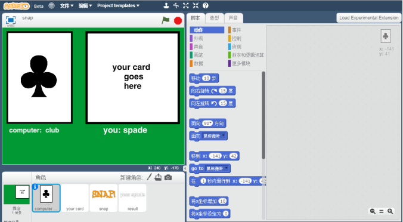
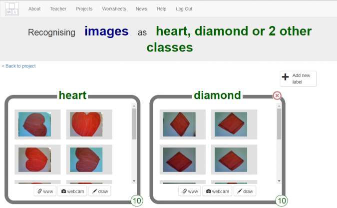
第二章 Machine Learning for Kids
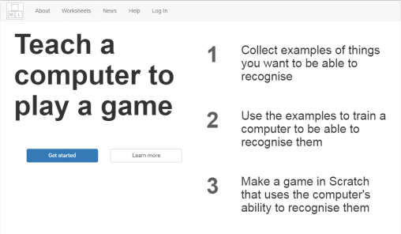
这是一个基于网站（https://machinelearningforkids.co.uk/），无需安装或复杂的设置即可使用的工具，该工具提供一个包括文本、数字或识别图像的培训机器学习系统和使用它们构建实际实践经验来介绍机器学习。机器学习简得来说是计算机学习如何从实例集合中执行任务，但却是一个涵盖各种技术和技术的广泛的术语，短短一本书是不可能讲述的完，所以在接下来的内容里，机器学习的部分会很简化。
无论是创建对文字识别项目，还是图像识别项目，甚至是数字识别项目，我们都是按照以下的操作来进行创建机器学习项目。
2.1 认识Machine Learning for Kids
操作 |
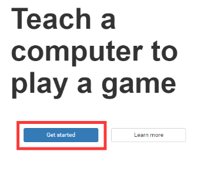 | 首页点击“Get started”开始进入机器学习的大门。 |
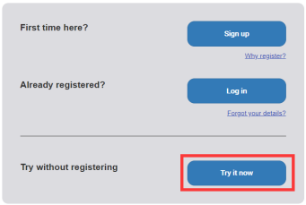 | 点击“Try it now”试用机器学习系统，进入到“Project”项目进行创作。 |
| 点击“+Add a new project”添加一个新的项目，创建一个项目。 |
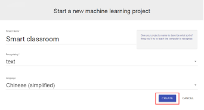 | 填写好项目名，选择识别类别和识别语言后点击“CREATE”创建这个项目。项目名暂不支持中文。在“Language”语言选项中选择“Chinese(simplified)”简体中文。 |

| 在“Recognizing”识别类别内有三种选项“text”文字类别，“images”图像类别，“numbers”数字类别。 你想教计算机识别什么类型的东西？ 对于单词、句子或段落，选择“文本” 对于照片、图表和图片，选择“图像” 对于数字或多个选择集合，选择“数字” |
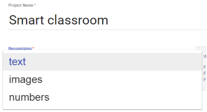 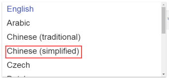 | “text”文字类别，机器学习系统可根据输入的文字进行学习，例如可以通过收集“善意”语句和“恶意”语句的示例，用来训练情感分析文本分类器。文字类别下有多种国家的语言可供选择。 |
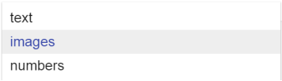 | “images”图像类别，机器学习系统可根据输入的图像进行学习，例如可以收集汽车和杯子的不同示例，用来训练图像识别分类器。 |
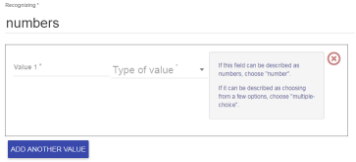 | “numbers”数字类别，机器学习系统可根据输入的数字进行学习，例如可以收集你的朋友如何前往学校几个问题，用来训练出一个预测模型，预测不同年龄、离校距离和邻居朋友数的被测试者是如何前往学校。 |
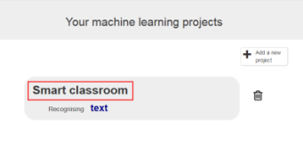 | 回到我们主题，点击进入刚刚创建好的项目名“Smart classroom”智能教室。 |
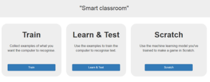 | 依次执行这三个步骤“Train”训练，“Learn&Test”学习与测试和“Scratch”。 |
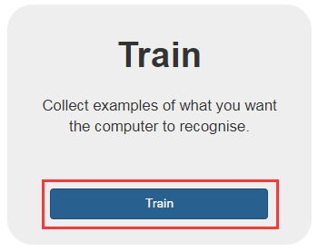 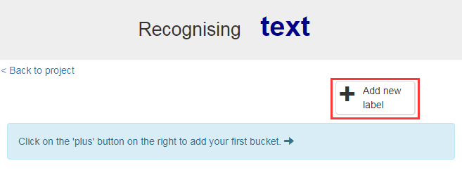 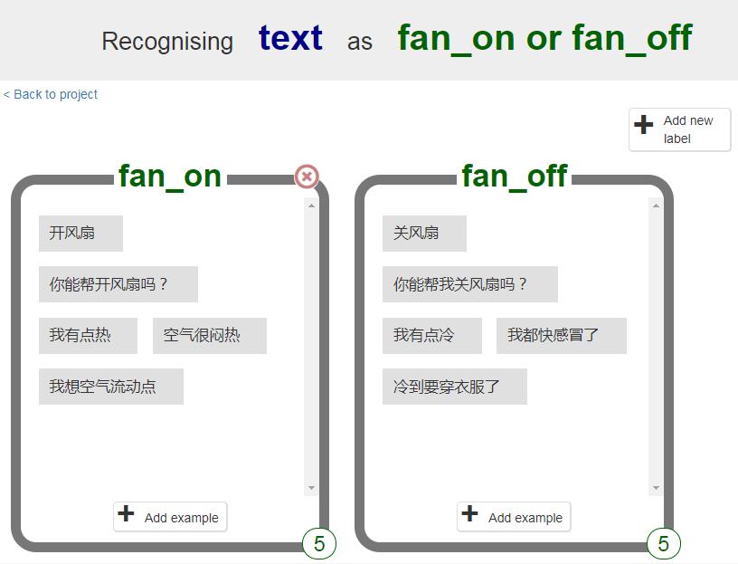 | 第一步“Train”训练按钮。 在这个功能里，你需要收集你想让电脑识别的例子。 以“智能教室”为例，我们需要教室设备能识别到我们的意图——“开关风扇”或“开关灯”。 点击“+Add new label”添加一个标签按钮，这个标签是我们接下来输入众多实例的一个识别标签，标签名只能是字母或数字。 |
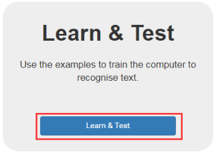 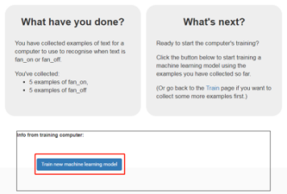 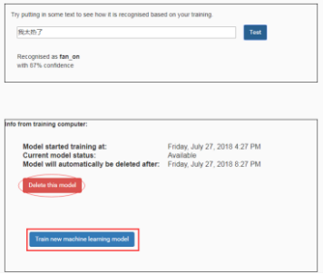 | 第二步“Learn & Test”学习与测试按钮。 在这个功能里，如果在第一步“Train”训练中没有提供足够的实例或给出的实例单，这项功能不会提供进一步的操作，会提示你的实例数量不够多，种类单一。 若在第一步中收集实例的数量和种类都满足条件，则会出现“Train new machine learning model”训练新的机器学习模型按钮，进行机器学习模型的生成，这需要几秒至几分钟不等的时间。这里我们收集了有关“fan_on”开灯和有关“fan_off”关灯实例各五个。 学习训练完之后，会出现一个测试框，这里我们可以输入一些有关“关开风扇”的语句，例如：“太热了”、“热得想脱外套了”等意图是关风扇的语句，输入完后测试系统会判断我们的意图，如图所示系统认为我们想要开风扇，并且 下面有一个数值，这是这个模型的confidence信心，判断这个模型有多少信心识别到你的意图。 |
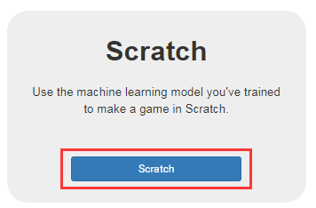 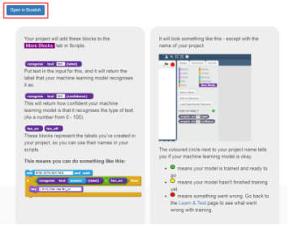 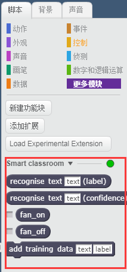 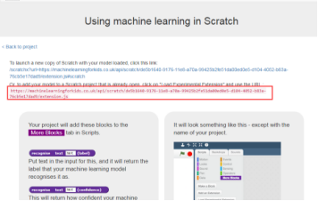 | 最后一步就是在Scratch上应用我们训练出来的机器学习模型了，点击“Scratch”按钮，如果我们在第二步中成功训练出了模型，则如图所示点击“Open in Scratch”打开Scratch。 在Scratch脚本区域的更多模块这，我们能看到亮着绿灯的积木块，这些都是能调用我们之前机器学习训练出来模型的积木块。 PS：亮绿灯表示这些经过机器学习训练的积木块是可以用，黄灯表示等候，红灯表示不可用。 打开了Scratch后，在上一步的页面会有一个扩展积木的URL，如图所示。这个URL可以在更多模块的“Load Experimental Extension”中进行引用。 |
第三章 智能助手 如何制作像“Siri”的智能助手来响应命令
3.1 智能助手
课程活动：创建一个帮助您控制教室设备的智能助手
课程目标：教计算机识别命令的含义
•计算机如何被训练来识别命令背后的意图
•置信度阈值表示机器识别其含义的准确度
•智能助手（例如Siri、小米助手、小爱同学）的工作原理
话题：数字助理与监督学习
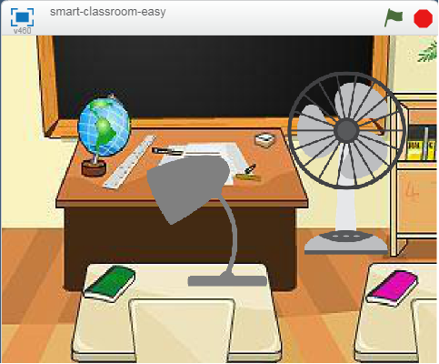
在这个项目中，你将创建一个虚拟教室，可以对你所说的内容做出反应。
你可以通过说出你想要的内容来控制教室中的家具设备。
接下来，你将通过给出每个设备的示例来教授计算机识别不同设备的命令。
认识智能家居
它就像钢铁侠中贾维斯一样，能够学习主人的生活习惯并能跟主人进行对话，掌握主人的生活规律，根据主人的作息时间，自动的打开和关闭家里的电器，不需要人远程或是定时的控制开关和按钮，完全智能化。
像星际穿越的塔斯一样，家里出现状况可以第一时间提醒主人，自动识别坏人的入侵，拉响警报，锁门关灯，并拨打报警电话等等。
Important:
主要模块介绍
模块 | 类别 | 功能 |
| 脚本 | 我们“智能教室”主要的编程思想，如果我们在输入框内输入“turn on the fan”时，则打开风扇。如果我们在输入框内输入“turn off the fan”时，则关闭风扇。同理“turn on the lamp”和“turn off the lamp”是打开台灯和关闭台灯 |

| 事件 | 程序启动模块，可通过点击舞台上的或来启动；通过舞台上的来结束程序 |
| 侦测 | 此积木提示用户输入相应的数据，回车后询问结束，用户输入的答案在“回答”积木种可以得到。一般这两个积木是配对使用。 |
| 控制 | 条件程序：重复执行模块内的程序，直到程序结束 |
| 控制 | 条件程序：若满足一定的条件，执行一个命令；不满条件，执行另一个命令，默认结束 |
| 数字和逻辑运算 | 比较运算符：使用比较运算符就能比较两边或者表达式的大小关系，它用来测试两个值之间的关系 |
| 事件 | 用来广播一个消息 |
界面 | 过程 |
导入模型 |
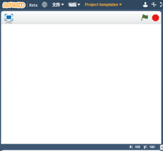 | 在界面顶部，有一个“Project templates”项目模板选项。这是Machine Learning for Kids网站为了方便孩子学习机器学习，把大多课程的脚本程序都打包好了。 在Scratch的“Project templates”项目模板中选取我们第一课要学习的项目——“Smart classroom”智能教室 |
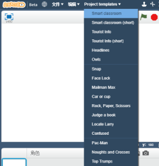 |
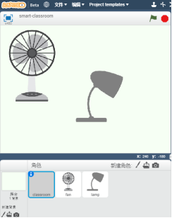 |
导入背景 |
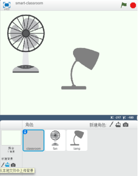 | 点击“”图标，从本地文件中上传背景。 |
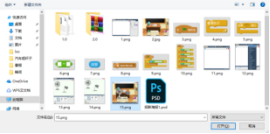 |
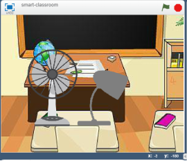 |
编程 |
| 当点击 绿色旗子或直接点击重复执行内的程序 绿色旗子或直接点击重复执行内的程序 |
| 当点击绿色旗子或直接点击 重复执行以下程序：提示用户“输入你的命令”，回车后询问结束，用户输入的答案在“回答”积木中可以得到刚才输入的回答，如果回答是打开风扇，那么广播“turn-fan-on” 重复执行以下程序：提示用户“输入你的命令”，回车后询问结束，用户输入的答案在“回答”积木中可以得到刚才输入的回答，如果回答是打开风扇，那么广播“turn-fan-on” |
| 点击“角色”中的“fan”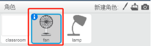 切换至“fan”的脚本程序。当接收到“turn-fan-on”将变量设定为“yes”重复执行，直到变量的值设为no，此时的风扇会一直在5个造型中切换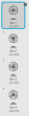，形成转动的效果。同理台灯的开关脚本程序也如此 |
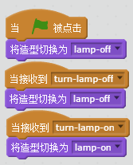 | 风扇的脚本和台灯的脚本如图所示，都是依靠广播接收然后做出切换造型的命令 |

| 编程脚本 tips：因为Scratch的模块有用颜色分类，编程的时候根据颜色找出不同模块。 按照“打开风扇”的编程思维，我们把“关闭风扇”，“打开台灯”和“关闭台灯”的脚本都理解好。 |
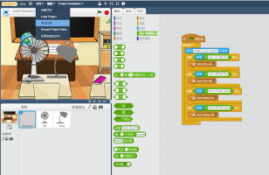 | 做完之后别忘了保存（要养成随手保存文件的习惯） |
按照上述的操作，我们只能得到一个必须一字不漏不多地输入“turn on the fan”、“turn off the fan”、“turn on the lamp“和”turn off the lamp”的命令来控制教室设备（风扇和台灯），如果需要多命令控制，我们只能通过一直添加条件程序，这和小明的初衷并不符合，接下来我们利用Machine Learning for Kids 来进行机器模型的构建，并导入至我们的Scratch程序内。
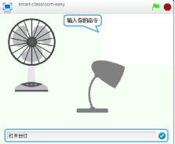 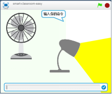
3.2 教学
训练系统 |
| 进入到Machine Learning for Kids网站，点击“Try it now”试用机器学习系统，进入到“Project”项目进行创作，并创建“Smart classroom”智能教室识别中文文本的项目。 |
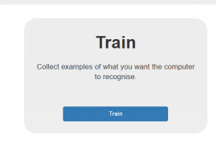 | 点击“Train” |
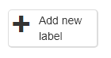 | 创建一个新标签 |
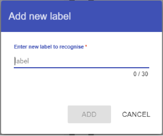 | 为你的项目输入一个标签名（只能是字母和数字），这个标签名是接下来你需要教室设备要做得动作，开关灯和开关风扇 |
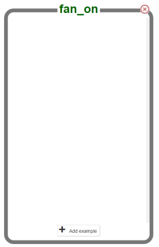 | 在标签里加入实例 例：我们想开风扇，就要加入“打开风扇”、“感觉好闷”和“我要出汗了”等等意图，机器识别系统会根据标签内的实例进行训练并针对这类问题生成模型，该模型会根据你输入的实例进行判别是属于哪个标签，哪个动作 |
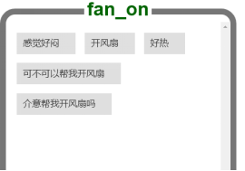 | 每个标签里的实例最少要有5个（越多越好，种类越多越好，像“开风扇”和“我好热”这算两类） |
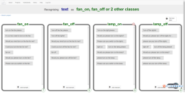 | 把“fan_on”开灯、”fan_off”关灯、”lamp_on”开风扇和”lamp_off”关风扇 |
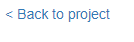 | 点击<Back to project返回项目按钮，回到项目页 |
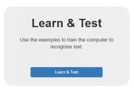 | 点击“Learn & Test”学习与测试按钮 |
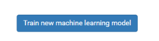 | 点击“Train new machine learning model”训练一个机器学习模型按钮建立一个新的机器学习模型 |
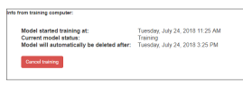 | 建立学习模型的过程需要几分钟，试用Machine Learning for Kids网站，未登录账号的情况下，训练完的模型将会保存4个小时，4个小时后将自动删除，再次使用需重新训练。 |

| 在对话框里输入测试字段，系统会判别字段然后做出判断是属于开关哪种教室设备和给出对这个行为的置信度得分，系统自己对自己的判别做出评价 如果置信度得分过低，就需要提供更多的实例 |
到目前为止你做了什么？ 你已经开始训练计算机识别控制两个教室设备的命令。 你可以通过收集更多的示例来实现此目的，而不是尝试编写规则来实现此目的。 这些示例被用于训练机器学习“模型”。 这被称为“监督学习”，因为你监督计算机的训练方式。 计算机将从你给出的示例中学习模式，例如单词的选择以及句子的结构方式。 这些将用于识别命令。 |

| 返回项目，点击Scratch，为你的项目增添上机器学习模型生成的积木块 |
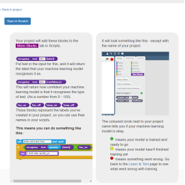 | 这时Scratch有新的变化（因为建立里新的学习模型而多了新积木） |
| 点击“Open in Scratch”进入Scratch页面 |
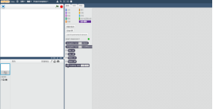 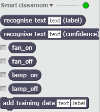 | 重新打开的Scratch，我们能看到更多模块下有很多新的积木块，这就是根据机器学习模型生成的积木块。此处我们用到 |
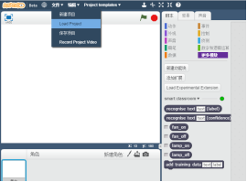 | 选择 “文件” 点击“Load Project”导入项目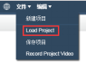导入之前保存的SB2的文件 |
| 导入了SB2文件后，在这里我们要使用你的机器学习模型，而不是之前你制定的规则。是你的项目添加的新块。 如果你给它文本内容，它将根据你给计算机的培训返回四个命令之一的标签 就是判别这个文本是想“打开风扇”、“关闭风扇”、“打开台灯”和“关闭风扇” “confidence”是针对“label”的置信度积木块 |
| 这时再点旗子，就会出现以下画面 输入命令，然后按Enter键。 风扇或灯泡应根据您的指示做出反应。 确保你测试的内容是否适用于你未在培训中包含的命令。 基本大功告成！ |
想法和拓展
我们现在能智能控制我们的风扇和台灯了，那么我们可以尝试控制其他的设备？
置信度值高低也影响着模型的判别，如果你选择的数字太高，计算机会经常说“对不起，我不确定你的意思”，如果你选择的数字太低，计算机将会出现太多错误。因此我们要寻找一个稳定的置信度数值，通过增删示例的方法，尝试使用其他置信度的数值，寻找一个适合你的机器学习模型的值。
第四章 情感分析 — 根据情感对消息作出反应的角色
4.1 情感分析
课程活动：创建一个人物，如果你对它说好听的话，它将对你笑，如果你对它说不好听的话，那么它将会哭。
课程目标：教计算机识别赞美和侮辱的文本。
•计算机如何被训练来识别文本所表达的情感信息
•监督学习如何构建能处理外部输入的系统
话题：情感分析与监督学习
认识情感分析
根据文本所表达的含义和情感信息将文本分为褒扬或贬义的两种或多种类型，将各种人类情感转化成实实在在的数据。
Important:
新建角色
| 在屏幕右下角找一支笔的图案，自己画一个脸（暂时不要求嘴巴） 通过点击，新建角色人物脸 |
| 在右边编辑器中画出一个没有嘴巴的脸 |
| 将你画的脸复制多两个出来，这样我们就拥有三张脸了 |
| 点击每张脸，在红框内进行命名，例如不确定，开心，不开心 |
| “不确定”的脸应该是一条直线，名字为“不确定” |
| “快乐”的脸上应该有笑容，命名为“快乐” |
| “悲伤”的脸应该看起来很悲伤，命名为“悲伤” |
| 点击“脚本”选项卡，编写如图的一段代码，编写好后及时保存项目。 |
这时候，当我们在输入框内输入“你很棒”，按下Enter后，我们新建的人物将会切换至“开心”标签，而输入其他文本“你好棒”这都不会有任何反应
到目前为止你做了什么？
你已经创建了一个应该对人们的输入不同类型做出反应的角色，并用一个简单的规则的方法对它进行编程。
如果你希望它对其他消息作出反应，则需要添加额外的条件程序。
问题
问题是你需要准确预测角色将收到什么消息，并把每一个可能的信息划分起来。这将很复杂而且不实际。
接下来，我们将尝试一种更好的方法——教计算机识别文本本身。
4.2 教学
训练系统 |
| 点击“+Add a new project”按钮，创建一个“text”识别文本的项目，识别语言为“Chinese（simplified）”简体中文 |

| 点击“Train”训练按钮进入训练页面,添加“Praise”夸奖和“Criticism”批评这两种标签，并为两个标签各输入10个示例 |
提示 你给的例子越多，电脑就越能识别这种文本是夸奖的还是批评的。 试一试 尝试用大致相同数量的例子来表示夸奖和批评。 如果你只有一个类型的例子，而不是多类型的，计算机可能会发现只有这种类型的可能，所以你会影响它学习识别文本的方式。 与你的例子混合起来，试着想出很多不同类型的例子。 例如，确保你包括一些很长的文本实例和一些很短的文本示例。 |

| 点击“Learn & Test”训练与测试按钮，点击“Train new machine learning model”训练一个机器学期模型按钮，进行生成模型 |
| 当系统训练完成后，会有一个测试框可供测试，每次输入内容，下方都会有系统的判别，并有置信度数值查看 |
到目前为止你做了什么？ 你已经开始训练一台电脑来识别文本是夸奖的还是批评的。 将各种人类情感转化成实实在在的数据，在计算机世界还是一个尚未开发的前沿。 基于监督学习的情感分析是目前研究的主流。 |

| 返回“项目页”点击“Scratch”按钮再点击“Open in Scratch”进入我们的Scratch编程界面 |
| 这时更多模块处会出现你机器学习模型生成的5个积木块，每个积木块与“智能教室”项目含义一致。 如果你给文本内容，它将根据你给计算机的培训返回“Praise”夸奖或“criticism”批评两个标签之一 |
| 选择“文件”，点击“Load Project”导入项目导入之前保存好的SB2文件 |
| 单击“脚本”选项卡，并更新脚本程序以使用你的机器学习模型，而不是以前所做的规则。 你可以通过来判别你输入的文本信息是否属于“Praise”夸奖，进行角色造型的切换。 |
| 这 时 再 点 旗 子 ，就 会 出 现 以 下 画 面 输 入 命 令 ， 然 后 按 Enter 键 。 观察角色的造型变换。 确 保 你 测 试 的 内 容 是 否 适 用 于 你 未 在 培 训 中 包 含 的 命 令 。 你做了什么 你已经修改了你的Scratch程序，能使用机器学习代替你以前以规则为基础的方法。 训练计算机能够识别自己的文本应该比试图列出每一个可能的消息要好得多。 你给它的例子越多，它就越能正确地识别文本。 |
创意与延伸
既然你已经完成了，为什么不尝试一下其他的想法呢？
或者制作出另一个“自己”跟自己聊天？
而不是仅仅改变他们的样子，让你的角色回复，基于它能在信息中所识别的东西！
尝试不同的性格
为什么不尝试不同的东西，比如动物，而不是人的脸？
它可以以不同的方式反应，而不是微笑。
例如，你可以让一只狗摇尾巴，如果你对它说好话的话！
不同情绪
你可以训练角色识别其他类型的信息，而不是夸奖和批评吗？可以是生气吗？
真实世界情绪分析
你能想到的一些例子，训练电脑来识别写作中的情感，这是有用的吗？
第五章 图像分类 — 一个能进行图形识别并匹配的游戏
5.1 图像分类
课程活动：用Scratch制作一个卡牌游戏来学习图形识别
课程目标：教会系统识别某种特定图形
•学会怎么训练系统进行图形识别
话题：图像识别与监督学习
在这个课程里你将会用“Scratch”制作一个简单的卡牌游戏“Snap”
为了课程的进展，你要有一组卡片的照片
但首先，你要训练你的电脑识别不同的照片不同的卡片
图像识别
以这张室外图为例可以提出三个问题，第一：在这张图片内有没有指示牌，这是图像检测，第二：把这个指示牌的位置找出来，这是图像定位，第三：指出图中的花坛、人、指示牌，这是图像的分类和识别。上述就是图像识别研究中的基本问题
在使用相机拍照中，当我们轻按快门时，相机都会自动寻找图中人脸在什么地方，并把焦点对焦在脸上，使得图像更清晰。
2018年是“人工智能”浪潮，也是“无人驾驶”浪潮，百度李彦宏坐在自家的无人驾驶车上五环去百度AI开发者大会。在汽车上有一个带有摄像头的辅助系统，能识别汽车行驶中的所有场景，包括车道线，交通标志，障碍物等，让我们的驾驶更简单，更方便。
Important:
主要模块介绍
模块 | 类别 | 功能 |
| 角色“computer card”电脑的卡片的脚本 | 我们“识别卡牌”主要的编程思想，让计算机选择随机卡片。 当程序开始执行时，造型会重复执行1到10不等的次数，如果当前造型是1号造型，把“computer”变量设定为“club”黑玫，同理黑桃、红桃和方块都一样，最后广播电脑准备好了 |
| 外观 | 判断当前造型是第几个造型，点击选项框，可在窗口看到当前造型顺序 |
| 数据 | 将变量设定为多少数值，在这里是将变量设定为“黑桃”、“红桃”、“黑玫”和“方块” |
5.2 教学
| 在4张白纸上用马克笔画出黑桃、红桃、黑玫和方块 |
| 点击“+Add a new project”按钮 ，创建一个“images”识别图像的项目 ，创建一个“images”识别图像的项目 |

| 点击“Train”训练按钮进入训练页面,添加“heart”红心 |
| 点击“webcam”网络相机，你相机现在所拍到的东西展示在预览窗口。 你要允许网站使用相机的权限给你的浏览器 保持红心在你的相机范围里，点击 添加一张照片 |
| 重复上述的操作，拍摄十张红桃相片 |
| 使用同样的操作，创建“diamond”方块，“club”黑玫和“spade”黑桃各添加10张相片 |
提示 你给它的例子越多，电脑就越能识别卡片是红心、方块、梅花或黑桃。 试一试 每个形状卡片试着给出大致相同数量的例子。 如果你只有一个类型的例子，而不是多个类型，计算机可能判别只有这种类型可能，所以你会影响它学会识别照片的方式。 |

| 返回“项目页”，点击“Learn & Test”训练与测试按钮，点击“Train new machine learning model”训练一个机器学期模型按钮，进行生成模型 |

| 当系统训练完成后，会有一个测试框可供测试，这里可供3个图像素材上传方式 1.是通过网络摄像头来拍摄测试图像 2. 通过画笔自己画出测试图像 通过画笔自己画出测试图像 3.通过网络图片地址测试图像 每次输入内容，下方都会有系统的判别，并有置信度数值查看 |
到目前为止你做了什么？ 你已经开始训练一台电脑来识别卡片，如红心、方块、梅花或黑桃。 你是通过收集示例照片来完成的。这些例子被用来训练机器学习的“模型”。 这就是所谓的“监督学习”，因为你监督计算机培训的方式。 计算机将从你所给的每一张照片中的颜色和形状中学习图案。这些将被用来识别新照片。 |
 
| 返回“项目页”点击“Scratch”按钮再点击“Open in Scratch”进入我们的Scratch编程界面 |
| 如果你给文本内容，它将根据你给计算机的培训返回“heart”红桃、“diamond”方块、“club”黑玫和“spade”黑桃四个标签之一。 |
| 在Scratch的“Project templates”项目模板中选取我们这堂课要学习的项目——识别卡牌游戏“Snap” |
| 点击角色 “computer card”电脑卡片。 “computer card”电脑卡片。 创建此脚本，这个脚本将让计算机选择随机卡片。 |
| 点击角色“your card”你的卡片。 创建此脚本，这个脚本将让计算机识别你的卡片。 |
| 点击角色“snap”。 当变量“computer”和变量“you”的识别出的卡片是一样的话，显示SNAP，获得游戏胜利。 |
| 点击角色“result”结果。 这些脚本会展示电脑认识这些卡片的结果 |
| 在角色栏点击“your card”你的卡片，选择“造型”，点击通过电脑摄像头拍摄图像 |
| 点击绿色标志 计算机将为其随机选择一张卡。 它会尝试识别你的卡，如果它们匹配，它会显示“SNAP！” |
到目前为止你做了什么？ 你已经用Scratch做了一个简单的卡片游戏 这个游戏利用网络相机来拍照然后用机器学习来认识这些照片 这个“图像识别”--教会电脑如何去识别图片 |
Ideas and Extensions
现在你已经完成了，为什么不给一些想法你去尝试或者你自己想出来
设计你自己的卡片
除了红心、黑桃、梅花和方块，为什么不自己设计卡片
显示“SNAP”
而不是仅仅显示“SNAP”！你能录下自己的声音吗？当牌匹配时，让你的Scratch发出声音？
让游戏更具竞争力
修改游戏，所以它不会首先显示计算机的卡。让它同时显示卡片，它开始识别你的卡片。
你说谁可以更快地说出“SNAP”你还是电脑？
第六章 手写识别 — 创建一个邮政分拣办公室，可以识别手写的邮政编码
6.1 邮局分拣
课程活动：创建一个邮政分拣办公室，可以识别手写的邮政编码
信封。
课程目标：教电脑辨认手写文字。
•学习计算机如何被训练来识别笔迹
•了解如何使用“光学字符识别”自动化任务，如识别邮政编码的信件
话题：光学字符识别，手写识别，图像分类，监督学习
在这个项目里你会制作一个进行文字分类的软件。这软件要会进行信件分类，这样才能进入当地的分拣邮局。
用邮件编码来分信件下一个目的地是一个好方法，你应该使用它
你要训练系统识别不同的手写邮编，然后进行信件分类
手写识别
1994年，美国BellSouth公司和IBM联手推出了世界上第一台触屏手机Simon PDA手机时，人们控制手机的方式不只有按键了，可以拿着触屏笔在屏幕上书写短信，收发邮件了。
在触屏上书写文字的过程就是手写识别。
Important:
主要模块介绍
模块 | 类别 | 功能 |
| 数据 | 积木中要求输入的参数（包括数字、字符串、下拉列表等）。而完成一个相对复杂的程序，需要存储、访问、修改数据才能完成一个特定任务。Scratch中使用变量和链表来管理数据。 变量还分为局部变量和全局变量，新建变量的时候，系统会询问变量的范围，适用于所有角色的即全局变量，适用于当前角色的即局部变量。 |
| 外观 | 角色有时候需要控制大小或者隐藏，比如游戏开始时的说明文字放大显示，游戏开始后把说明文字隐藏等。 角色的放大或缩小使用积木将角色的大小设定为或将角色的大小增加为。前者的参数是一个百分比，100则是原始大小，后者根据角色当前的大小进行调整。显示/隐藏角色使用积木显示或隐藏 |
6.2 教学
训练系统 |
| 点击“+Add a new project”按钮 ，创建一个项目名为“Mailman Max”，识别内容为“images”图像的项目 ，创建一个项目名为“Mailman Max”，识别内容为“images”图像的项目 |
| 点击“Train”训练按钮进入训练页面,点击，添加名为“Oxford”牛津的标签 |
| 点击“Oxford”牛津标签下的，打开一个手写画板，这里有3个工具，“Draw”写，“Erase”擦除和“Reset”清除。 这里我们选择“Draw”写，在空白处写上“OX”，“OX”是牛津地区邮编的开头，尽量使用整个空白处，如图所示。 点击添加这张图像 |
| 为这个标签重复写10个“OX” |
| 按照同样的操作，为项目添加2个标签“Gulidford”吉尔福德和“Southampton”南安普顿，为“Gulidford”吉尔福德画出10个“GU”例子，为“Southampton”南安普顿画出10个“SO”例子 |

| 返回“项目页”，点击“Learn & Test”训练与测试按钮，点击“Train new machine learning model”训练一个机器学期模型按钮，进行生成模型 |

| 当系统训练完成后，会有一个测试框可供测试，这里可供3个图像素材上传方式 1.是通过网络摄像头来拍摄测试图像 2.通过画笔自己画出测试图像 3.通过网络图片地址测试图像 每次输入内容，下方都会有系统的判别，并有置信度数值查看 |
到目前为止你做了什么？ 你已经开始训练电脑来识别手写牛津、吉尔福德或南安普顿地区邮政编码的图片。 你通过收集你写出来自己完成的。这些例子被用来训练机器学习的“模型”。 手写识别能够使用户按照最自然、最方便的输入方式进行文字输入，易学易用，可取代键盘或者鼠标。 计算机将从你绘制的每个示例的形状中学习模式。这将被用来识别邮政编码，我们将写在信封上进行排序。 |
 
| 返回“项目页”点击“Scratch”按钮再点击“Open in Scratch”进入我们的Scratch编程界面 |
| 这时更多模块处会出现你机器学习模型生成的5个积木块，每个积木块与“智能教室”项目含义一致。 如果你给文本内容，它将根据你给计算机的培训返回“Oxford”牛津 、“Gulidford”吉尔福德、“Southampton”南安普顿三个标签之一 、“Gulidford”吉尔福德、“Southampton”南安普顿三个标签之一 |
| 在Scratch的“Project templates”项目模板中选取我们这堂课要学习的项目——邮局分拣“Mailman Max” |
| Scratch导入项目后，选择“数据”按钮，点击“新建变量”并创建一个名为“answer”答案的变量，该变量适用于所有角色 |
| 取消前的选项框，使其不再舞台上显示。 点击 “letter”，“letter”信件的“造型”内有15个造型 “letter”，“letter”信件的“造型”内有15个造型 |
| 程序大致思路：当点击绿旗时，“letter”信件角色隐藏回到坐标x：0，y：70的位置，并将大小设定为100%，抽取15个造型中的一个，显示出来。 达到随机抽取信件的功能 |
| 程序大致思路：当 “letter”信件角色被点击时，广播“start sending”。 “letter”信件角色被点击时，广播“start sending”。 当接收到广播“start sending”，角色移动到x：30，y：70的位置，并将大小设定为30%。 达到投信件的功能 |
| 程序大致思路：接收到广播“sorted”时，执行判断，如果电脑判断这个回答是属于“Oxford”牛津地区的话，将 “letter”信件角色移动到x：-170，y：-60的为位置，“Guildford”吉尔福德地区和 “letter”信件角色移动到x：-170，y：-60的为位置，“Guildford”吉尔福德地区和 “Southampton”南安普顿地区 “Southampton”南安普顿地区 达到信件分类和信件派送到正确地点的功能 |
| 点击“postcode”邮政编码 |
| 与“letter”信件角色编程思想一样 程序大致思路：当点击绿旗时，“postcode”邮政编码角色隐藏回到坐标x：-95，y：20的位置，并将大小设定为23%，显示出来 |
| 下面的脚本使计算机尝试并识别在信封上写的邮政编码 |
| 将手写的邮政编码与信封的其余部分一起，送到邮车上，送到正确的地区邮局 |
| 选择“造型”，使用线宽滑滑块，这样我们可以写一条粗黑线 |
| 用画笔工具写一个邮政编码的前两个字母。 填满空间，就像你练习的例子一样。 你也应该看到它出现在信封的正确位置 为了识别准确，这里需要“造型”的背景是要白色 Ps： 每次更换邮编，如果点击了“清除”或使用“橡皮擦”都需要重新使用白色的“油漆桶” |
| 点击绿色旗子开始程序，点击舞台上的信件，此时信件会缩小 电脑会试图识别你写的邮编 一旦电脑有了答案，就会移动到相对应地区的小车上，这里移动的地区是“Southampton”南安普顿地区 我们项目也基本完成了！ |
到目前为止你做了什么？ 你已经训练了一个机器学习模型，能够进行笔迹识别。这简称为“光学字符识别”或“OCR”。 你通过收集笔迹的例子来训练计算机，使之能够识别它。 你建立了一个简单而简单的例子，只使用前两个字母为三个邮政编码区域。 想象一下，在国家的每个邮政编码区域做同样的事情。你必须创造更多的训练桶来覆盖全国邮政编码地区。你需要收集数以千计的训练样本，有很多不同的人的笔迹，这样电脑就能很好地识别它们。 这就是邮政分拣如何在现实生活中分类信件的方法。 |
创意与延伸
既然你已经完成了，为什么不尝试一下其他的想法呢？
试试别人的手写字迹
你已经训练系统能够识别你的手写字迹，但你能不能是它识别别人的字迹
找个朋友来测试它，看看能不能工作
如果没有，你需要得到一些他们的写作例子来添加你的训练数据。你能得到更多的训练实例，电脑就能更好地识别各种笔迹
试试更多的邮编
我们只给了前两个字母，使计算机更容易
我们项目里用的都是网站作者的所在地——英国的邮编
但是我们怎样才能让它认识到像“广州：510000、东莞：523000、深圳：518000”这样的中国邮政编码呢
如果你收集了各种不同的实际完整邮政编码（不只是前两个字母）的训练实例，你应该能够训练它来识别它们。这可能需要超过10个例子
第七章 相片分类 — 训练你的电脑学会照片分类
7.1 认识相片分类
课程活动：训练你的电脑学会照片分类。
课程目标：训练电脑识别物体的图片。
•怎么样去训练电脑识别照片
•重要的是系统训练学习的部分
话题：图像分类与监督学习
在这个项目里，你会学习如何用Scratch进行图像识别。
你应该训练系统完成两点要求：
识别一定数量例子汽车的照片
识别一定数量例子的照片
图像分类
根据各自在图像信息中所反映的不同特征，把不同类别的目标区分开来的图像处理方法。
Important:
主要模块介绍
模块 | 类别 | 功能 |
| 脚本 | 变量“y”代表图片上升的告诉，这里设定为152 变量“item”代表第几张图片，此处共有22张图片。 当变量“item”这张图片的顺序少于23，角色造型切换至下一张，且移动到坐标x：0，y：0处，然后滑动到上一张图片y坐标减8处，最后再次克隆角色自己。 |
| 外观 | 外观模块中最后两块积木移至最上层和下移层，会影响角色在舞台上的遮盖顺序，它决定了角色在重叠区域优先显示哪个角色。 |
7.2 教学
训练系统 |
| 点击“+Add a new project”按钮 ，创建一个“images”识别图像的项目 ，创建一个“images”识别图像的项目 |
| 点击“Train”训练按钮进入训练页面,点击“+Add a new label”按钮，创建“car”车和“cup”杯子两个标签 |
| 打开百度图片 搜索“汽车”或“杯子”，点击图片进入“图片列表”，使用拖拉的方式，把右边网站的汽车图片拖进car标签内 Ps：直接在百度图片首页拖拉，会发生等错误 |
| 重复操作，为“car”汽车和“cup”杯子各添加10个例子 |
提示 你给它的例子越多，电脑就越能识别出汽车或者杯子 试一试 试着为杯子和汽车提供大致相同的例子。 如果你只有一个类型的例子，而不是多类型的，计算机可能会发现只有这种类型的可能，所以你会影响它学习识别图片的方式。 与你的例子混合起来，试着想出很多不同类型的例子 例如，确保你包含了一些不同背景的例子。 如果你用来训练的汽车的每一张照片都有背景的草图，你用来训练的每一张照片都在一张木桌上，你可能最终会训练电脑来识别草或木头 |

| 点击“Learn & Test”训练与测试按钮，点击“Train new machine learning model”训练一个机器学期模型按钮，进行生成模型 |

| 当系统训练完成后，会有一个测试框可供测试，这里可供3个图像素材上传方式 1. 是通过网络摄像头来拍摄测试图像 是通过网络摄像头来拍摄测试图像 2.通过画笔自己画出测试图像 3.通过网络图片地址测试图像 每次输入内容，下方都会有系统的判别，并有置信度数值查看 |
到目前为止你做了什么？ 你已经开始了训练系统识别杯子或汽车的图片。你使用的是用例子，而不是编程序来实现图片的识别。这些图片就是机器识别的“模型”。 这就是所谓的“监督学习”，因为你监督计算机培训的方式。 计算机将从你选择的示例照片中学习图案，如形状和颜色的使用。这些将被用来识别新的图像。 |
| 返回“项目页”点击“Scratch”按钮再点击“Open in Scratch”进入我们的Scratch编程界面 |
| 这时更多模块处会出现你机器学习模型生成的5个积木块，每个积木块与“智能教室”项目含义一致。 如果你给文本内容，它将根据你给计算机的培训返回“car”汽车或“cup”杯子两个标签之一 |
| 在Scratch的“Project templates”项目模板中选取我们这堂课要学习的项目——图片分类“Car or cup” |

| 点击绿色标志试试看。 该项目有几个随机照片或汽车或杯子。 接下来，您将修改项目，使用您给计算机的培训，以便它可以将这些照片分类成两堆 |
| 单击“角色”mystery ，然后单击“脚本”选项卡，并更改脚本以使用您的机器学习模型 |
| 此时脚本使用你训练过的机器学习模型来把相片分成两类，一类是汽车，一类是杯子。 如果你的训练系统出错，你需要回到“Train”训练页面，收集更多的例子。 用你收集的额外例子来训练一个新模型 |
你做了什么？ 你已经用机器构建了一个智能图像分类机器人 训练出来的机器人凭借它自己识别图片比人识别图片快上上千倍 你给越多的例子，它越能更好的给你正确的照片 |
创意与延伸
既然你已经完成了，为什么不尝试一下其他的想法呢？
加入三种不同的照片？
不只是识别杯子和车子，你能加入第三种！
试着把电脑弄糊涂
在草地背景上训练电脑识别汽车的十张照片？
训练电脑在一个纯白色背景下用十张照片来识别杯子。
现在看看电脑是否识别一辆纯白色背景的汽车。
或者如果它能认出一个草地上的杯子！
电脑迷惑了吗？它学会认出杯子和汽车了吗？还是受背景影响更大？
实验了解计算机是如何学习的，以及它是如何运行的
第八章 人脸识别 — 通过训练来学习机器学习模型来识别乐高人物的面孔
8.1 认识人脸识别
课程活动：打一个手机，只有当它识别你的脸时才可以解锁。
课程目标：教电脑识别面孔的样子
•学习如何训练计算机进行面部识别
•学习面部识别如何用于认证
话题：人脸识别，生物特征识别，图像分类，监督学习
在这个项目中，你将做出一个可以使用你的脸解锁虚拟电话的Scratch项目。
你将训练一个机器学习模型来识别一个面孔，以便它只为正确的人打开电话。
人脸识别
人脸识别，是基于人的脸部特征信息进行身份识别的一种生物识别技术。用摄像机或摄像头采集含有人脸的图像或视频流，并自动在图像中检测和跟踪人脸，进而对检测到的人脸进行脸部识别的一系列相关技术，通常也叫做人像识别、面部识别。
Important:
8.2 教学
| 点击“+Add a new project”按钮 ，创建一个“images”识别图像的项目 ，创建一个“images”识别图像的项目 |

| 点击“Train”训练按钮进入训练页面,添加“Granted”准许标签 |
| 点击“webcam”网络相机，你相机现在所拍到的东西展示在预览窗口。 你要允许网站使用相机的权限给你的浏览器 保持人物在你的相机范围里，点击 添加一张照片 |
| 重复上述的操作，拍摄十张人物相片 |
| 使用同样的操作，创建“denied”拒接标签，并添加10张不一样人物的相片 |

| 返回“项目页”，点击“Learn & Test”训练与测试按钮，点击“Train new machine learning model”训练一个机器学期模型按钮，进行生成模型 |
| 当系统训练完成后，会有一个测试框可供测试，这里可供3个图像素材上传方式 1. 是通过网络摄像头来拍摄测试图像 是通过网络摄像头来拍摄测试图像 2. 通过画笔自己画出测试图像 通过画笔自己画出测试图像 3.通过网络图片地址测试图像 每次输入内容，下方都会有系统的判别，并有置信度数值查看 |
到目前为止你做了什么？ 你开始训练一台电脑来识别你的照片。 而不是试图写规则来做到这一点，你这样做是通过收集自己的照片。这些例子被用来训练机器学习的“模型”。 这就是所谓的“监督学习”，因为你监督计算机培训的方式。 计算机将从你拍摄的照片中学习模式。希望这将主要是面部特征和头发，但要注意，它也可能包括衣服和背景！ |

| 返回“项目页”点击“Scratch”按钮再点击“Open in Scratch”进入我们的Scratch编程界面 |
| 如果你给文本内容，它将根据你给计算机的培训返回“Granted”准许、“diamond”拒绝两个标签之一。 |
| 在Scratch的“Project templates”项目模板中选取我们这堂课要学习的项目——人脸识别“Face Lock”。 选择“”角色，创建此脚本，判断角色图片是否是“granted”准许，来进行广播信息。 |
| 点击角色“camera view”相机视图。 选项卡选择“造型”，点击“拍摄相片当做造型”按钮。 使用网络摄像头拍摄一张不允许使用手机的照片。 点击“新服装从相机”按钮再次，并采取一张照片的脸应该不允许使用手机；一张允许使用手机的。 |
| 点击舞台背景。 创建此脚本，这将使手机屏幕判断是“scanning”扫描、“granted”准许、“denied”拒接三个状态中哪个。 |
| 是测试的时候了！点击“绿色旗子” |
| 如果角色“ ”选择的是“”，那么点击“绿色旗子”时，系统判别结果将会是“GRANTED”准许使用手机，若角色是“”，那么将是“LOCKED”拒绝使用手机的 ”选择的是“”，那么点击“绿色旗子”时，系统判别结果将会是“GRANTED”准许使用手机，若角色是“”，那么将是“LOCKED”拒绝使用手机的 |
到目前为止你做了什么？ 你已经训练了面部识别系统。你通过收集面部图片的例子来完成这一点，并用它来训练一个能够识别面部的机器学习模型。 你使用这个模型来创建一个应用程序，使用模型作为验证方法（证明某人是他们所说的人）。 到目前为止，这是一个非常简单的系统。 你能想出办法欺骗它吗？ |
想法和拓展
如果计算机不确定怎么办？
如果计算机不确定怎么办？
置信区间返回一个百分比（从0到100的数字），它是自信的，它已经识别了脸。
你如何更新你的脚本来使用这个？
如果计算机只有10%确定它已经正确地识别了乐高人物的脸，手机还能解锁吗？
增加更多的人接受计算机
你能用手机识别两个不同的人的脸吗？
试着把电脑弄糊涂
如果你只在一个地方训练计算机来识别你，如果你在别的地方，它还能识别你吗？如果你换衣服怎么办？
电脑是识别你的脸还是别的什么？
实验来了解计算机是如何学习的以及它是如何运行的。
第九章 模型预测 — 学生将根据调查结果训练预测模型
9.1 认识模型预测
课程活动：训练计算机能够预测你早上怎样去学校
课程目标：教电脑做预测
•预测分析可用于识别结构化数据中的模式
话题：预测模型、测试、精度
在这个项目中，你将训练计算机寻找你的同学如何到达学校的模式
你将通过计算机来预测不同的人到学校的旅行来测试这个训练
预测模型
预测模型是指用于预测的，用数学语言或公式所描述的事物间的数量关系。它在一定程度上揭示了事物间的内在规律性，预测时把它作为计算预测值的直接依据
Important:
9.2 教学
训练系统 |
| 点击“+Add a new project”按钮，创建一个项目名为“Mailman Max”，识别内容为“numbers”数字的项目 点击，添加“age”年龄，内容类型“number”，“distance”距离，内容类型“number”和“friends”朋友数目，内容类型“number” Ps：如果距离可以被描述为数字，选择“number”数字类型 如果它可以被描述为从几个选项中选择，选择“multiple-choice”多想选择类型 你应该使用你在调查中使用的值，但不包括实际的学校旅行方法 |

| 点击“Train”训练按钮进入训练页面,点击 ，为训练提供每种上学方式的调查回来例子 ，为训练提供每种上学方式的调查回来例子 添加名为“car”汽车方式的标签，添加名为“walk”走路方式的标签，添加名为“cycle”骑自行车方式的标签 |
| 点击，为标签提供“age”年龄，“distance”离校距离和“friends”附近朋友数。 |

| 返回“项目页”，点击“Learn & Test”训练与测试按钮，点击“Train new machine learning model”训练一个机器学期模型按钮，进行生成模型 |
| 当系统训练完成后，会有一个测试的按钮，输入测试年龄，离校距离，身边朋友数。会预测出采取哪种的出行方式 |
到目前为止你做了什么？ 你用旅行调查的数字训练了一个简单的机器学习模型。 你已经创建了一个“预测模型”，叫做“预测模型”，因为我们使用这样的模型来进行预测。如果你知道他们的年龄和他们离学校有多远，你可以用这个模型来预测某人步行上学的可能性。 但是这些预测有多准确呢？我们来测试一下！ |
| 返回至“Train”训练页面，删除一个标签内的调查例子，再删除前先记住“age”、“distance”和“friends”的数值。点击删除该例子 |
| 进入“Learn & Test”训练与测试按钮，再次点击“Train new machine learning model”训练一个机器学期模型按钮，进行生成模型 |
| 等待新模型的生成，将删除例子的数值输入到测试框中，比较计算机的预测和正确的答案。电脑做对了吗？ |
到目前为止你做了什么？ 你已经测试了你的预测机器学习模型，看看它是多么精确。 通过先删除计算机训练的例子，这意味着你通过询问它的答案来测试它，这个问题是我们以前没有测试过的。 （如果你用用来培训的例子来测试它，它就会还有该例子中进行训练，那么你就不能真正判断计算机是否学会了自己的答案。） 但是考试有多公平呢？ 你选择了一个简单的例子吗？（就像一个离学校很远的学生！） 或者你选择了一个很难的例子？ 你怎么能选择一个例子来让它公平？ |
创意与延伸
既然你已经完成了，为什么不尝试一下其他的想法呢？
或者想出一个你自己的？
尝试使用这种方法
你能想出一种在游戏来使用计算机预测人们如何前往学校吗？
尝试更大的测试
不要仅仅从训练数据中删除一个示例并使用它来测试，请尝试使用更多的示例。
你认为你应该用多少来做测试？
如果你使用的测试太少，你就不能确定计算机有多好
如果你使用了太多的测试，你就减少了计算机需要学习多少个例子